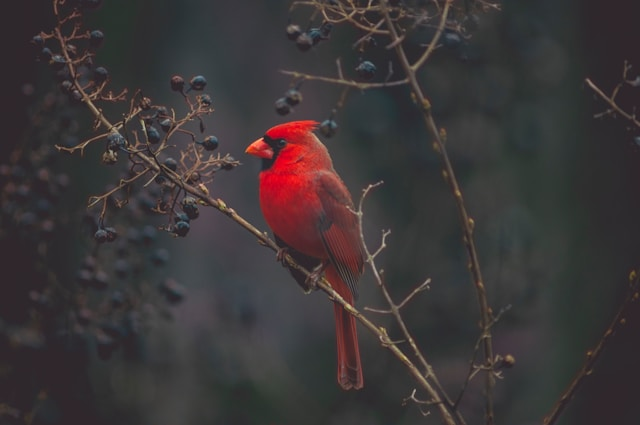
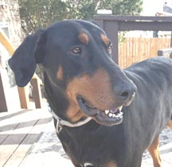
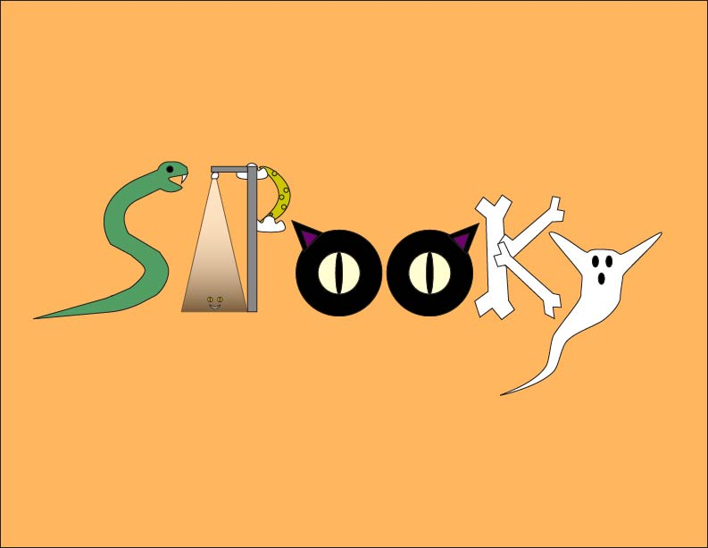
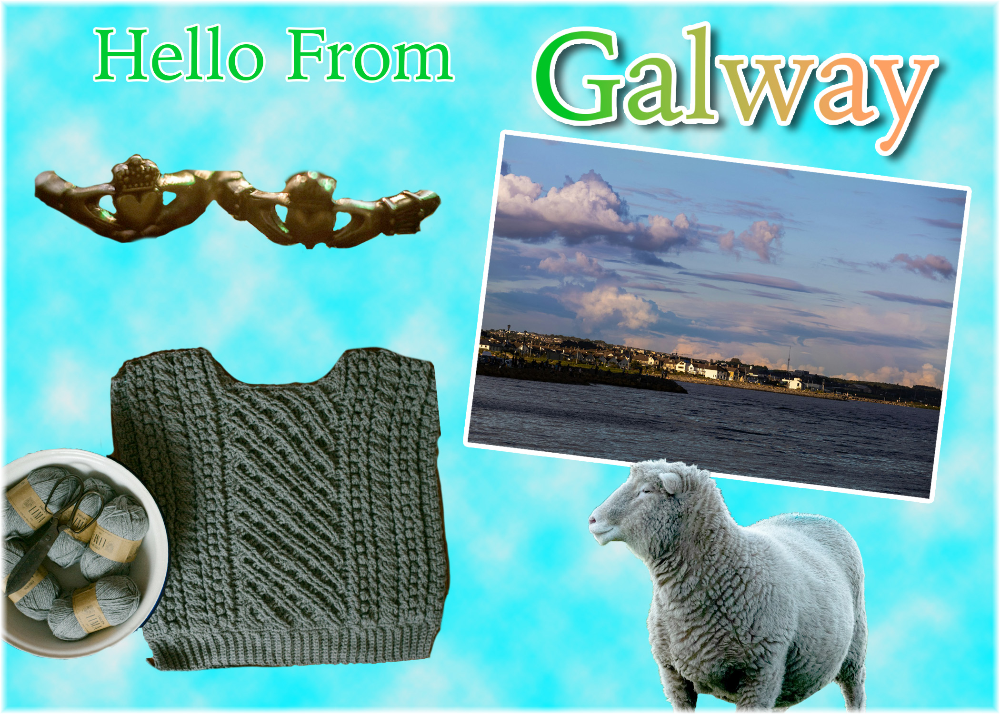
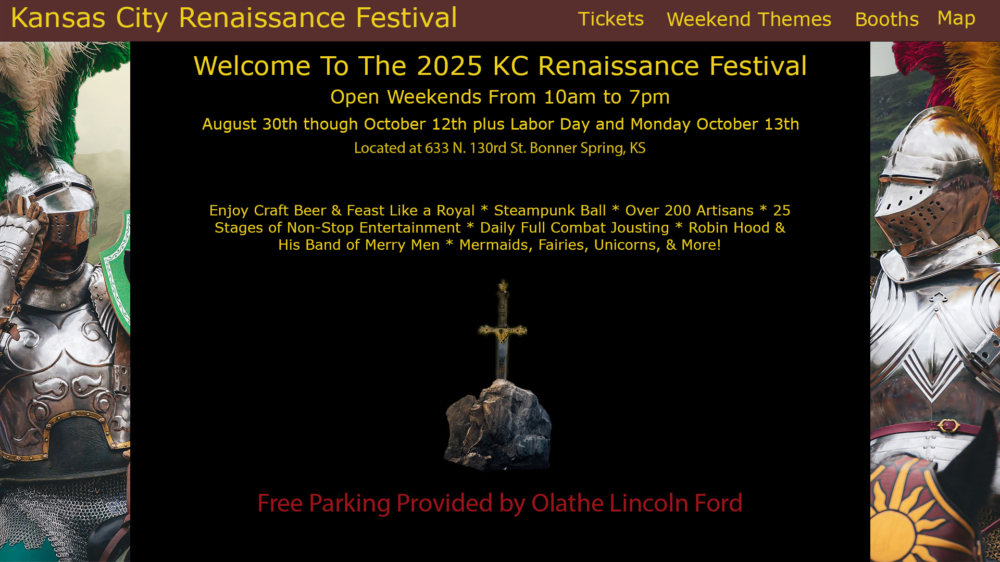
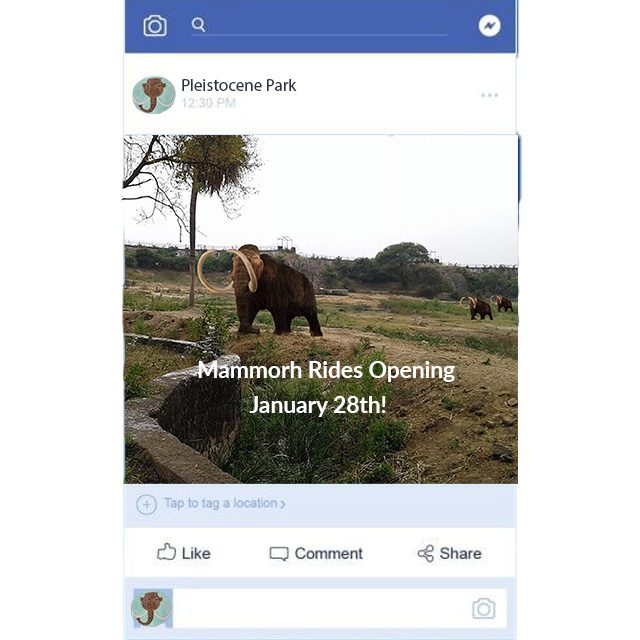
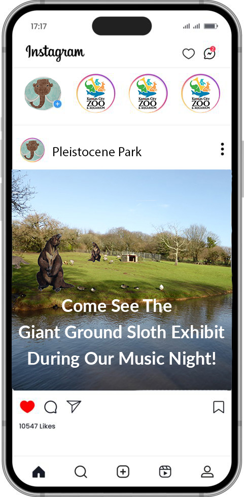
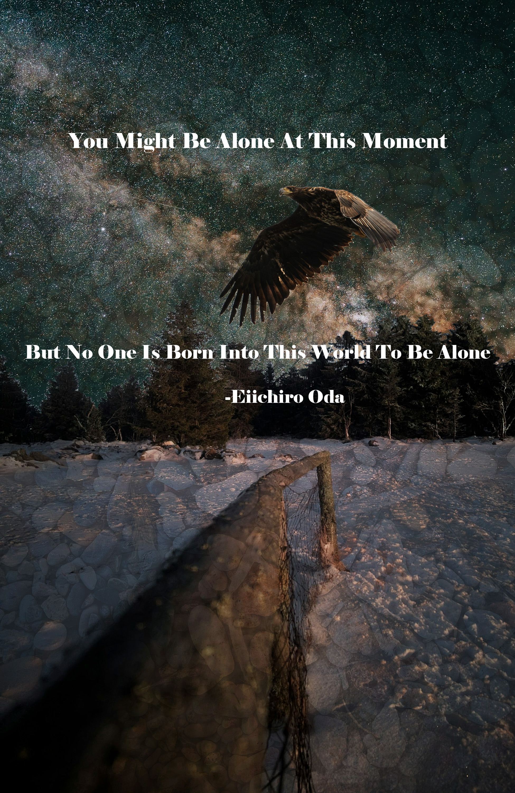
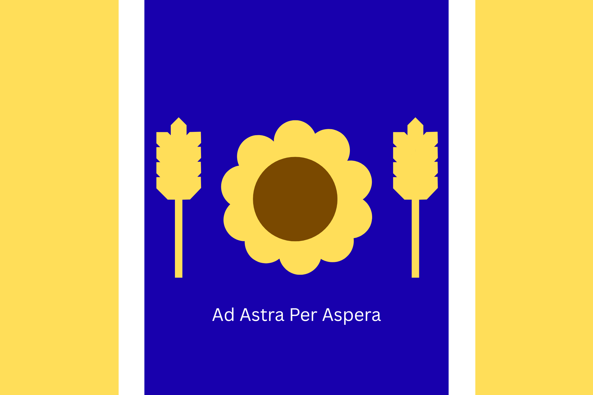
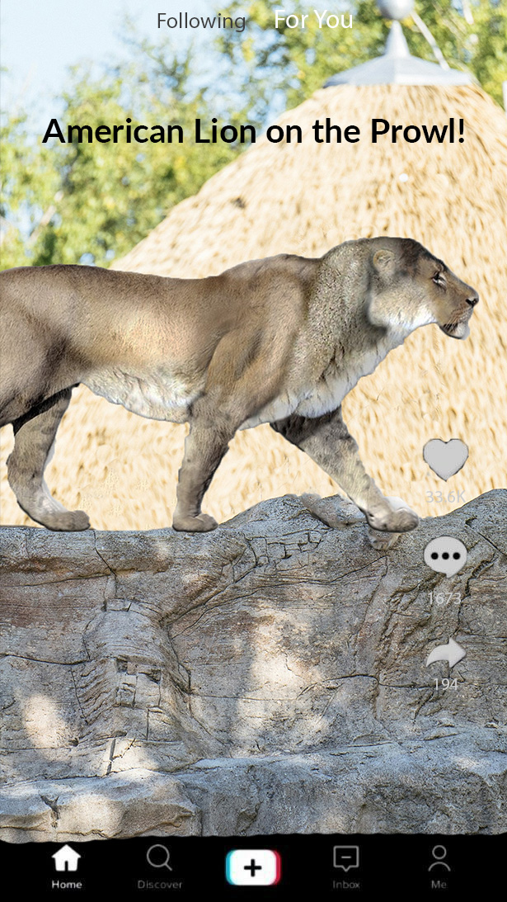

Patrick Follis' Portfolio
About
My name is Patrick Follis. I’m currently getting an Associate’s degree in Web Development and have certificates in Web Development, Digital Media, and Web Technologies. I also have a Bachelor’s Degree in Political Science.
I can be contacted through email at pfollis618@gmail.com or through LinkedIn at linkedin.com/in/patrick-e-follis/.
My Projects
Here are some of the websites that I have created.
This website teaches about different Celtic Myths

Teaches about Atlantic Puffins

This website's background changes color if you type in the right combination of letters!

Website that explains flexboxes
Tells the History of the Irish city of Galway
Website full of pictures of Oceania animals

A website made to test flipping images when crolling
Website with different weather pictures made to test navigation effects.

KC Doberman RescueMedia
Kinetic Logo made using Adobe Illustrator.

Galway Postcard made using Adobe Photoshop. Images come from Unsplash

KC Ren Fest Home Page idea made using Adobe Photoshop. Images come from Unsplash

Fake Facebook post for a park with Woolly Mammoths. Images come from Unsplash.

Fake Instagram post for a park that brought giant ground sloths back from extinction.

Inspirational Poster made using Adobe Photoshop. Images come from Unsplash

Kansas Flag Redesign Idea made using Canva.

Fake TikTok post for a park with the extinct American Lion.

Skills
Coding
HTML
CSS
JavaScript
Programs
Adobe Premeire Pro
Adobe Photoshop
Visual Studio Code
Figma
Degrees
Johnson County Community College
- Web Development Associate's Degree - starting in May 2026
- Digital Media Certificate
- Web Development Certificate
- Web Technologies Certificate
Kansas State University
- Bachelor's Degree in Political Science with a minor in history.